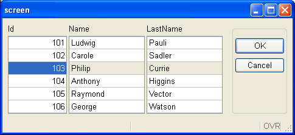
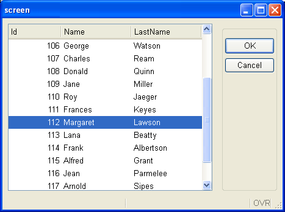

This page describes product differences you must be aware of when migrating from IBM Informix 4gl to the most recent Genero BDL version.
Summary:
IBM Informix 4gl (aka I4GL) and Genero BDL are distinct developments tools designed and implemented by different companies. The purpose of Genero BDL is to be as compatible as possible with I4GL, and it is very close. The success of Genero BDL depends on the ability to compile and run legacy 4gl code with minimum code changes. For text-mode applications, the migration steps are often reduced to recompile-and-run.
However, Genero BDL extends the I4GL language with advanced features such as a Graphical User Interface and SQL access to non-Informix databases. This leads to some differences that you have to deal with, but these incompatibilities are minor compared to the added value of these extensions.
In some rare cases, the Genero BDL team decided to take a different path to implement an I4GL feature, because we considered that the IBM Informix 4gl solution was not adapted. For example, the dynamic arrays in I4GL and Genero BDL have different semantics.
This guide will help you identify the differences and find solutions to make the migration from IBM Informix 4gl easier.
The history of the IBM Informix 4gl language is very long. It started in the mid-80s with I4GL version 4.x; then came version 6.x in 1996. I4GL version 7.2 was released in 1998; then came 7.31, 7.32, and finally the latest version: 7.50. There have been several bug fixes and enhancements over the life of I4GL, resulting in releases that slightly differ. Supporting strict compatibility with all versions of I4GL is not possible for Genero BDL; we have to rely on a specific version of I4GL.
Therefore, the Genero BDL compatibility level with IBM Informix 4gl is achieved by comparing with the latest version of I4GL, which is version 7.50 at the time of this writing.
With IBM Informix 4gl, you can extend the fglgo runtime executable or link your binary programs with c4gl by adding your own C functions.
When migrating to Genero, you must review your C Extensions in order to provide them as shared libraries. To simplify migration, Genero searches the userextension shared library (or DLL) automatically.
If you have C extensions as ESQL/C modules (.ec) executing SQL instructions, Genero provides the FESQLC compiler to compile the .ec sources, which can then be linked with the Genero BDL runtime library to build a C extension library.
See C Extensions and ask your support to see how to get the FESQLC compiler, this tool is distributed as a separate product.
To support language-specific and country-specific locales, as well as multi-byte character sets like BIG5, IBM Informix 4gl uses the Informix GLS library.
For locale support, Genero BDL does not use the Informix GLS library, in order to be independent from Informix; Genero uses the standard C library locale functions, based on the POSIX setlocale() implementation provided by the operating system.
I4GL uses the CLIENT_LOCALE environment variable to define the locale for the application. With Genero, you must use the LANG/LC_ALL environment variables to specify the locale of the application. Note, however, that CLIENT_LOCALE is still needed to define the locale for the IBM Informix database client.
For more details about locale support, see Localization.
Before compiling .4gl or .per files with Genero BDL, you must extract the database schema with the fgldbsch tool. This will produce an .sch file, and optionally, .val and .att files. The fgldbsch tool can extract database schemas from Informix, and from other databases like Oracle, SQL Server, DB2, PostgreSQL, MySQL and Genero db.
For more details about fgldbsch, see the Database Schema page.
The IBM Informix 4gl compilers include a pseudo-code based runtime system called RDS as well as a C-compiled solution, the c4gl compiler. The RDS solution is typically used in a development environment, supporting a debugger, while the Informix 4gl C compiler is traditionally used to maximize performance on production sites. However, the C compiled binaries need to be built on the same target platform as the production system.
Unlike IBM Informix 4gl, Genero supports only a pseudo-code solution, which is as fast as the C-compiled version of IBM Informix 4gl. Since p-code files are portable, you can develop your application on a platform that is different from the production platform, saving porting procedures and simplifying deployment tasks.
Note however that Genero supports C extensions.
IBM Informix 4gl and Genero BDL handle windows and form content rendering differently. I4GL is TUI centric, while Genero is closer to real GUI rendering, using resizable windows and proportional fonts. To simplify migration from TUI-style products, Genero supportes the Traditional GUI mode.
To design a form with IBM Informix 4gl, you organize labels and fields in the SCREEN section of a .per Form Specification File. Genero introduced a new LAYOUT section to place form elements. The new LAYOUT section allows more sophisticated form design than SCREEN, having parent/child containers, layout tags, and new widgets.
When writing new programs for GUI applications, you should use a LAYOUT section instead of SCREEN. However, the SCREEN section is not de-supported in Genero; it must be used to design TUI mode forms.
The next picture shows a form using a SCREEN section in TUI mode:
and here is a form using a LAYOUT section in GUI mode:

With IBM Informix 4gl, if you want to display a list of records on the screen, you must use a static screen array with a finite number of lines in the SCREEN section of the form specification file:
01DATABASE stores02SCREEN03{04Id First name Last name05[f001 |f002 |f003 ]06[f001 |f002 |f003 ]07[f001 |f002 |f003 ]08[f001 |f002 |f003 ]09[f001 |f002 |f003 ]10[f001 |f002 |f003 ]11}12END13TABLES14customer15END16ATTRIBUTES17f001 = customer.customer_num ;18f002 = customer.fname ;19f003 = customer.lname ;20END21INSTRUCTIONS22SCREEN RECORD sr_cust[6]( customer.* );23END
The display of the above form specification file looks like this in GUI mode:

With Genero, you can still use a static screen array for applications displayed in dumb terminals, but for new GUI applications you should use the new TABLE container or a Table layout tag in a GRID (modified lines are underlined):
01DATABASE stores02LAYOUT03TABLE04{05Id First name Last name06[f001 |f002 |f003 ]07[f001 |f002 |f003 ]08[f001 |f002 |f003 ]09[f001 |f002 |f003 ]10[f001 |f002 |f003 ]11[f001 |f002 |f003 ]12}13END14END15TABLES16customer17END18ATTRIBUTES19f001 = customer.customer_num ;20f002 = customer.fname ;21f003 = customer.lname ;22END23INSTRUCTIONS24SCREEN RECORD sr_cust( customer.* );25END
The display of the above form specification file is a real table widget, which is resizable. Note that the .4gl source is untouched:

Further, Genero also supports SCROLLGRID containers, to display a record list where each record is displayed in a static sub-section of the form.
Many IBM Informix 4gl programmers are accustomed to the TUI mode and often exploit all the display possibilities of these products. Some language instructions are specific to character terminals and should be reviewed when migrating to Genero BDL.
For example, you can display data records in a screen array with a DISPLAY
array[array-index].* TO screen-array[screen-line]
instruction, optionally with the ATTRIBUTE clause to use some TTY
attributes like colors, REVERSE, BOLD. When scrolling a
list, I4GL actually uses the terminal scrolling capabilities to preserve
the TTY attributes in each row. This applies only to the current rows visible on
the screen, but it was a commonly used feature.
Because Genero BDL implements a new technique to handle user interface elements generically and dynamically for different types of front-ends, there are some TUI specifics which can't be supported any longer. The example above, with TTY attributes and screen array scrolling, can't be supported by Genero BDL. A good replacement for DISPLAY ... TO ... ATTRIBUTE() in DISPLAY ARRAY or INPUT ARRAY is to use the new DIALOG.setArrayAttributes() method.
Genero BDL still supports TUI-specific instructions like DISPLAY AT, CLEAR SCREEN, CLEAR WINDOW as well as TTY attributes. But you should use those instructions for TUI programs only. New GUI programs should use new Genero user interface possibilities. For example, a good replacement for TTY attributes is to use Presentation Styles.
In this documentation, language elements specific to TUI (Text User Interface) mode are marked TUI Only!
When the first interactive instruction is reached in a Genero BDL program, a default window named SCREEN is created.
You are free to use the default SCREEN window and open one or more successive forms in this window; it can also be closed, with the CLOSE WINDOW SCREEN instruction. If you don't close the default SCREEN window, and you open a new window with the OPEN WINDOW command, an empty default SCREEN window will be displayed.
When writing a GUI application with Genero, you typically open the main form in the SCREEN window, and display other forms with the OPEN WINDOW name WITH FORM instruction:
01MAIN02DEFER INTERRUPT03OPTIONS INPUT WRAP04...05OPEN FORM f_main FROM "custfrm"06DISPLAY FORM f_main07...08END MAIN
The SCREEN window is not visible in TUI mode because program windows are rendered as simple boxes and SCREEN is created without borders. The size of the SCREEN window is 80x25 in TUI mode.
When writing an IBM Informix 4gl program for TUI mode, you typically create application windows with the OPEN WINDOW instruction by specifying an X,Y position on the screen in characters; sometimes even the size of the window is specified, for example when you don't use a form to create the window. This is still supported by Genero BDL of course, especially for TUI mode applications.
However, with Genero BDL the TUI mode window position and sizes are ignored in GUI mode. We recommend that you create a window with a form by using the OPEN WINDOW name WITH FORM instruction. In GUI mode the window position is defined by the window manager, and the size adapts to the form displayed. Some front-ends like GDC keep the position and the size of windows in the workstation registry, and apply the saved position/size when the same window is reopened.
Both IBM Informix 4gl and Genero BDL implement static arrays with a fixed size. Static arrays cannot be extended:
01 DEFINE arr ARRAY[100] OF RECORD LIKE customer.*IBM Informix introduced dynamic arrays in version 7.32. Unlike Genero BDL, I4GL requires you to explicitly associate memory storage with a dynamic array by using the ALLOCATE ARRAY statement, and to free the storage with DEALLOCATE ARRAY. With I4GL, you can resize a dynamic array with the RESIZE ARRAY statement. However, one important limitation of I4GL dynamic arrays is that interactive instructions cannot use them.
01DEFINE arr DYNAMIC ARRAY OF RECORD LIKE customer.*02ALLOCATE ARRAY arr[10]03RESIZE ARRAY arr[100]02LET arr[50].cust_name = "Smith"04DEALLOCATE ARRAY arr
Genero BDL supports dynamic arrays in a slightly different way than IBM Informix 4gl. There are no allocation, resizing, or de-allocation instructions for dynamic array in Genero, because the memory for element storage is automatically allocated when needed. Further, you can use dynamic arrays with interactive instructions in Genero BDL, making a DISPLAY ARRAY or INPUT ARRAY unlimited.
01DEFINE arr DYNAMIC ARRAY OF RECORD LIKE customer.*02LET arr[50].cust_name = "Smith"
The main difference between static arrays and dynamic arrays is the memory usage; when you use dynamic arrays, elements are allocated on demand. With static arrays, memory is allocated for the complete array when the variable is created.
Warning: The semantics of dynamic arrays is
very similar to static arrays, but there are some small differences. Keep in mind that the runtime system automatically allocates a new element for a
dynamic array when needed. For example, when a DISPLAY arr[100].*
is executed
with a dynamic array, the element at index 100 is automatically
created if does not exist.
For more details about dynamic arrays, see the Arrays page.
IBM Informix 4gl provides a program debugger using the Informix-specific debugger commands and syntax.
Genero BDL implements a program debugger with a new set of commands, compatible with the well-known gdb tool. The Genero debugger can be used alone in command line mode, or with a graphical shell compatible with gdb, such as ddd:
ddd --debugger "fglrun -d myprog"
For more details, see the Debugger page.
IBM Informix 4gl version 7 introduced a special syntax to integrate any SQL syntax into the program code, to avoid the limitations of the static SQL syntax:
01MAIN02...03SQL04SELECT * INTO $rec.* FROM customer05WHERE cust_id = $id06END SQL07...08END MAIN
The SQL block syntax was a bit confusing, and the statement was not fully parsed, unlike traditional static SQL statements:
01MAIN02...03SELECT * INTO $rec.* FOR customer -- invalid syntax will give compilation error04WHERE cust_id = $id05...06END MAIN
Genero BDL supports static SQL and dynamic SQL only, as in the first versions of IBM Informix 4gl. You can execute any type of SQL statement by using Dynamic SQL.
If you have SQL Blocks in your code, these must be replaced by EXECUTE IMMEDIATE if no SQL parameters / fetch variables are used, or by PREPARE + EXECUTE USING INTO if SQL parameters and/or fetch variables are used. You can also declare cursors with the new dynamic SQL instruction DECLARE FROM.
For more details about SQL support in Genero, see SQL Programming.
IBM Informix 4gl allows global variable declarations of the same variable with different data types. Each different declaration found by the IBM Informix 4gl compiler defines a distinct global variable, which can be used separately. This can actually be very confusing (the same global variable name can, for example, reference a DATE value in module A and an INTEGER in module B).
The next code example shows two .4gl modules defining the same global variable with different data types:
main.4gl:
01GLOBALS02DEFINE v INTEGER03END GLOBALS04...05MAIN06...07LET v = 12308...09END MAIN
module.4gl:
01GLOBALS02DEFINE v DATE03END GLOBALS04...05FUNCTION test()06...07LET v = TODAY08...09END FUNCTION
Genero fglcomp compiles both modules separately without problem, but when linking with fgllink, the linker raises error -1337:
"The variable variable-name has been redefined with a different type or length, definition in module1.4gl, redefinition in module2.4gl"
You must review your code and use the same data type for all global variables having the same name.
IBM Informix 4gl is not very strict when it comes to function signature checking at link time. With I4GL, you can, for example, define a function in module A that returns three values, and call that function in module B with a returning clause specifying two variables:
Module A:
01FUNCTION func( )02RETURN "abc", "def", "ghi"03END FUNCTION
Module B (main):
01MAIN02DEFINE v1, v2 VARCHAR(100)03CALL func() RETURNING v1, v204END MAIN
The c4gl compiler (7.32) compiles and links these modules without error, but at execution time you get the following runtime error:
Program stopped at "main.4gl", line number 3.
FORMS statement error number -1320.
A function has not returned the correct number of values
expected by the calling function.
When using Genero BDL, the mistake will be detected at link time, and you won't need to run your program to check for these programming errors:
ERROR(-6200): Module 'main': The function module_a.func(0,3) will be
called as func(0,2).
Similarly, IBM Informix 4gl does not detect an invalid number of parameters passed to a function defined in a different module:
Module A:
01FUNCTION func( p )02DEFINE p INTEGER03DISPLAY p04END FUNCTION
Module B (main):
01MAIN02CALL func(1,2)03END MAIN
The c4gl compiler (7.32) compiles and links these modules without error, but at execution time, you get the following runtime error:
Program stopped at "main.4gl", line number 2.
FORMS statement error number -1318.
A parameter count mismatch has occurred between the calling
function and the called function.
When using Genero BDL, the error will be detected at link time:
ERROR(-6200): Module 'main': The function module_a.func(1,0) will be
called as func(2,0).
Note, however, that Genero BDL does not check function signatures when several RETURN instructions are found by the compiler. This is necessary in order to be compatible with IBM Informix 4gl. The next code example compiles and runs with both I4GL and Genero BDL:
01MAIN02DEFINE v1, v2 VARCHAR(100)03CALL func(1) RETURNING v104DISPLAY v105CALL func(2) RETURNING v1, v206DISPLAY v1, v207END MAIN0809FUNCTION func( n )10DEFINE n INTEGER11IF n == 1 THEN12RETURN "abc"13ELSE14RETURN "abc", "def"15END IF16END FUNCTION
However, this type of programming is not recommended.
Genero BDL introduces a new data type named STRING, which is similar to VARCHAR, but without a size limit. The STRING data type does not exist in IBM Informix 4gl. The STRING data type implementation is optimized for memory usage; unlike CHAR/VARCHAR, Genero will only allocate the memory needed to hold the actual character string value in a STRING variable.
You typically use a STRING within utility functions (for example, to hold the path to a file). Another typical usage is with CONSTRUCT; instead of declaring a CHAR(5000) or VARCHAR(5000) to hold the SQL condition produced by a CONSTRUCT statement, you can use a STRING variable. This STRING variable can then be completed to build the SQL text and passed to the PREPARE or DECLARE instruction.
However, because of SQL assignment and comparison rules, you cannot use STRING variables for SQL parameters (in the USING clause of EXECUTE or OPEN/FOREACH): For SQL parameters, you must use CHAR or VARCHAR, because the maximum size is used to bind SQL parameters to pass or fetch values to/from the database server.
For more details, see the STRING data type.
IBM Informix 4gl-based applications often need additional utility C routines to be implemented as C Extensions, for example to access the file-system and read the content of a directory. Writing C Extensions is an important cost in cross-platform portability and maintenance.
Genero BDL provides a set of utility libraries that include functions and classes which can probably replace some of the routines you wrote for your IBM Informix 4gl application. For example, Genero implements typical file-system functions to search directories and files.
If portability is a concern (for example if you want to move from a UNIX platform to a Microsoft Windows or Mac OS-X platform), you should review your C routines and check whether there is a replacement built into the Genero runtime system library.
With Genero BDL (given that a JRE is installed on the application server), you even have access to the huge Java class library with the Java Interface.
Starting with IBM Informix 4gl version 7.50, you can deploy I4GL functions as Web Services. The published functions can be subscribed from programs that run on a Web client in another programming language, such as 4gl.
Web Services support was introduced in Genero before IBM Informix 4gl introduced the feature in version 7.50. Each implementation is quite different but the basic principles are the same: publishing 4gl functions as Web Services, by handling WS requests and supporting easy input and output parameter conversions between WS data formats and 4GL variables.
See the Genero Web Services documentation for more details.
IBM Informix 4gl version 7.50.xC4 introduced file manipulation instructions to access files on the operating system running the application. These instructions can be used to open, read, write, seek and close files:
01MAIN02DEFINE fd1, fd2 INTEGER, v1,v2 VARCHAR(10)03OPEN FILE fd1 FROM "/tmp/file1" OPTIONS (READ, FORMAT="CVS")04OPEN FILE fd2 FROM "/tmp/file2" OPTIONS (WRITE, APPEND, CREATE, FORMAT="CVS")05READ FROM fd1 INTO v1, v206SEEK ON fd2 TO 0 FROM LAST INTO v107WRITE TO fd2 USING v1, v208CLOSE FILE fd109CLOSE FILE fd210END MAIN
Genero BDL implements file I/O support with the base.Channel built-in class. This class allows you to handle files, but it can also open streams to sub-processes (i.e. pipes) and sockets. See The Channel class for more details.
Enhancement reference: BZ#19156